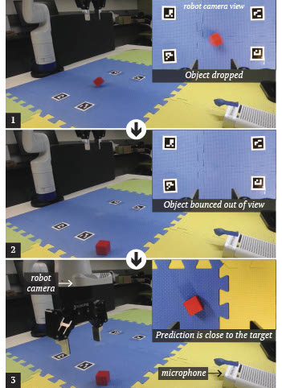
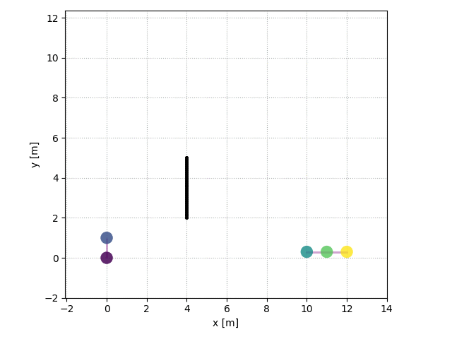
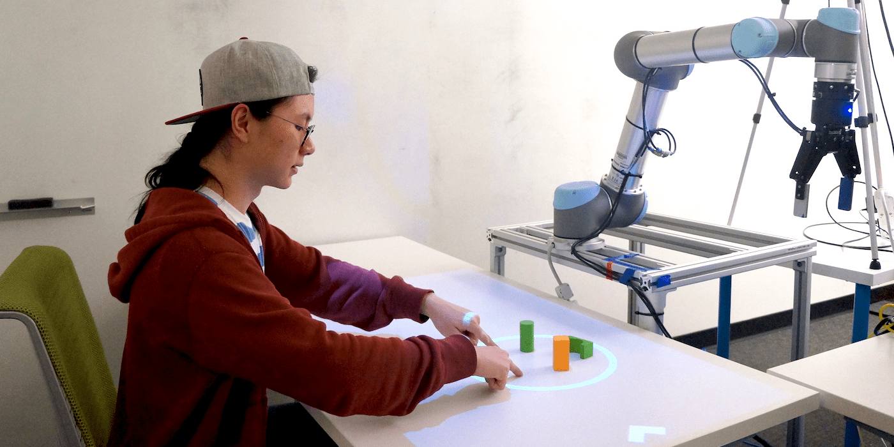

Open Science
We are committed to disseminating our knowledge and research products to the scientific community and the public. Our research implementations are available on our Github page (https://github.com/intuitivecomputing).
Dataset: Audio-Visual Representations of Object Drops

Dataset | Bu, Fanjun; Huang, Chien-Ming, 2020, "Dataset: Audio-visual representations of object drops", https://doi.org/10.7281/T1/EP0W7Y, Johns Hopkins University Data Archive, V1
Github page | Related paper | Video demo
As robots perform manipulation tasks and interact with objects, it is probable that they accidentally drop objects that subsequently bounce out of their visual fields (e.g., due to an inadequate grasp of an unfamiliar object). To enable robots to recover from such errors, we draw upon the concept of object permanence—objects remain in existence even when they are not being sensed (e.g., seen) directly. This dataset was created to address the above challenge. The data was collected by having a Kinova Gen3 Robot Arm repeatedly pick up a wooden cube (3cm x 3cm x 3cm) and release the cube 0.3 meters above a table surface. A 7-channel microphone array was used to record the impact sound from when the robot gripper opened to drop the cube. A camera mounted on the robot’s wrist observed the beginning of the cube’s trajectory before the cube bounced out of view, and a ceiling camera recorded the rest of the trajectory. Audio recordings were saved as WAV files, and the cube’s trajectory was saved as NumPy arrays, with two versions: the partial trajectory observed from the robot wrist camera and the complete trajectory obtained by merging two partial trajectories.
PySocialForce: A Python Implementation of the Extended Social Force Model for Pedestrian Dynamics

Github page | Related publication (available soon)
Modeling pedestrian dynamics has a variety of valuable applications, ranging from emergency simulation and urban planning to crowd simulation in video games and movies. Pedestrian simulation also plays an important role in developing mobile robots that are capable of navigating crowded human environments in a safe, efficient, and socially appropriate manner.
PySocialForce is a pure Python package for simulating crowd dynamics based on the extended social force model. While it can be used for general crowd simulation, it is designed with social navigation applications in mind. Our Python implementation makes it easily extensible (e.g., adding new custom “social forces”) and able to interface with modern reinforcement learning environments (e.g., OpenAI Gym).
PATI: A Projection-Based Augmented Table-Top Interface for Robot Programming

Github page | Related publication
As robots begin to provide daily assistance to individuals in human environments, their end-users, who do not necessarily have substantial technical training or backgrounds in robotics or programming, will ultimately need to program and “re-task” their robots to perform a variety of custom tasks.
PATI allows users to use simple, common gestures (e.g., pinch gestures) and tools (e.g., shape tools) to specify table-top manipulation tasks (e.g., pick-and-place) for a robot manipulator. It further enables users to interact with the environment directly when providing task specifications; for example, users can utilize gestures and tools to annotate the environment with task-relevant information, such as specifying target landmarks and selecting objects of interest.